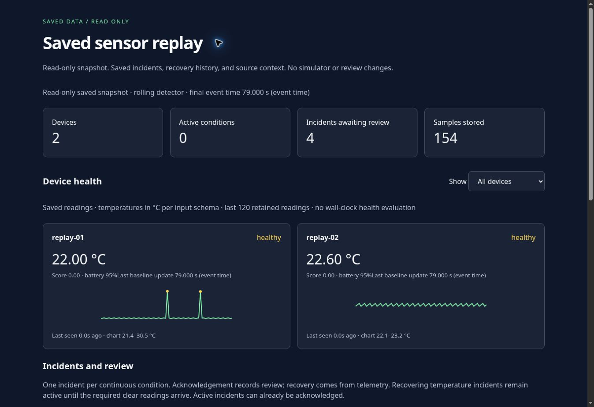

Edge Sensor Monitor
From sensor readings to reviewable incidents.
I build a Python monitoring demonstrator that combines sensor-stream simulation, recorded-data replay, statistical anomaly detection, and a dashboard backed by SQLite.
Source repository: private. This page shares an overview and a selected project capture.

The problem
An unusual reading, a recovered condition, and a reviewed alert mean different things. Monitoring software needs to preserve those distinctions so a reviewer can inspect what happened without silently changing the evidence.
My contribution
I develop the workflow across simulated telemetry, validated file replay, causal statistical detection, SQLite persistence, and the review interface. Engineering work includes validated inputs, persistent recovery history, restart checkpoints, and a read-only viewer for inspecting saved experiments.
Acknowledging an incident records that someone reviewed it; it does not mark equipment as recovered. Recorded operating context remains visible without automatically suppressing alerts or accepting a changed baseline.
Scope and limitations
Live and bundled replay demonstrations use synthetic telemetry. Separate recorded-data experiments expose substantial detector limitations. An experimental context-based candidate reduced outside-report flags but also reduced scoring coverage and missed a reported failure interval, so it was not promoted.
This is a local monitoring demonstrator, not a production fault-diagnosis system, a trained neural model, or a hardware-validated deployment.
Source availability
The implementation and detailed experiment reports remain private. No source code is included on this page.
Discuss the project